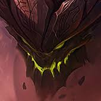

A questão eterna! A ilha do top está disposta a responde-la!
Desde os primórdios do League of Legends, todos sabem que esses campeões são conhecidos por serem extremamente desagradáveis de se enfrentar.
Mas afinal, por que desse meme existir?
Pois no top, a maioria dos campeões são corpo-a-corpo e duelistas, e estes campeões não-convencionais conseguem abusar muito de seus oponentes
e por muito tempo, quase que sem counter. Clique nos campeões e saiba mais!
Mas e em SUA opinião? Qual é o mais irritante? Vote abaixo!


